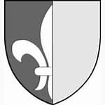

31937681 Elin Magnusdotter
* Lemu, Finland
* Lemu, Finland
63875363 Karin Jacobsdotter Garp
† omkring 1439
† omkring 1439
127750726 Jacob (Jeppe) Jönsson Garp
* 1395 Lemu, Åbo, Finland
† Efter 1425-06
Landssyneman
* 1395 Lemu, Åbo, Finland
† Efter 1425-06
Landssyneman
255501452 Jöns Andersson Garp
* omkring 1350 Storkartano, Laitila, Finland
† 1407 Tursanperä, Mynämäki, Finland
Riksråd, Riddare
Blev ca 57 år
* omkring 1350 Storkartano, Laitila, Finland
† 1407 Tursanperä, Mynämäki, Finland
Riksråd, Riddare
Blev ca 57 år

127750727 Ragnhild Eriksdotter
* Porvoo, Finland
† omkring 1449
* Porvoo, Finland
† omkring 1449
255501454 Erik Jonsson
† 1454-03
Häradshövding
† 1454-03
Häradshövding